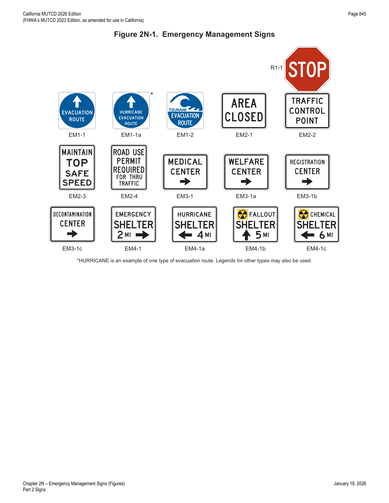

Part 2 · Signs · Chapter 2N
Emergency Management Signs
Signs used to guide and control highway traffic during declared emergencies — evacuation routes, area closures, traffic control points, speed control, and directional signing to emergency aid centers and shelters.
2N.01Emergency Management
- 01Contingency planning for an emergency evacuation should be considered by all State and local jurisdictions and should consider the use of all applicable roadways.
- 02In the event of a disaster where highways that cannot be used will be closed, a successful contingency plan should account for the following elements: a controlled operation of certain designated highways, the establishment of traffic operations for the expediting of essential traffic, and the provision of emergency centers for civilian aid.
2N.02Design and Use of Emergency Management Signs
- 01Emergency Management signs (see Figure 2N-1) shall be used to guide and control highway traffic during an emergency.
- 02During an emergency, permanently-installed regulatory and warning signs that conflict with Emergency Management signs should be removed or covered until such time as the Emergency Management signs are no longer necessary.
- 03Except for Evacuation Route signs, Emergency Management signs that are no longer necessitated by the emergency should be promptly removed, and signs that normally provide regulation, warning, or guidance that were removed or covered during the emergency should be promptly displayed again.
- 04Advance planning for transportation operations emergencies shall be the responsibility of State and local authorities.
- 05The Federal Government provides guidance to the States as necessitated by changing circumstances.
- 06Except as provided in Section 2A.07, the sizes for Emergency Management signs shall be as shown in Table 2N-1.
- 07Section 2A.07 contains information regarding the applicability of the various columns in Table 2N-1.
- 08Signs larger than those shown in Table 2N-1 may be used (see Section 2A.07).
- 09As conditions permit, the Emergency Management signs should be replaced or augmented by standard signs.
- 10Except where specifically required elsewhere in this Chapter, the background of Emergency Management signs should be retroreflective.
- 11Because Emergency Management signs might be needed in large numbers for temporary use during an emergency, consideration should be given to their fabrication from any light and economical material that can serve through the emergency period.
- 12Any Emergency Management sign that is used to mark an area that is contaminated by biological or chemical warfare agents or radioactive fallout may be accompanied by the standard symbol that is illustrated in the upper left corner of the EM4-1b and EM4-1c signs in Figure 2N-1.
2N.03Evacuation Route Signs (EM1 Series)
- 01An Advance Turn Arrow (M5 series) or Directional Arrow (M6 series) auxiliary plaque (see Figure 2D-6) shall be installed below the EM1-2 sign. The Advance Turn Arrow or Directional Arrow auxiliary plaque shall have a white arrow and border on a blue background when used with an EM1-2 sign.
- 02Where different evacuation conditions use different evacuation routes in the same area, the word HURRICANE, or a word that describes some other type of evacuation route, may be added above the EVACUATION ROUTE legend within the blue circular symbol on the EM1-1a sign.
- 03The EM1-1 series signs shall include a white directional arrow. The arrow designs on the EM1-1 series signs shall include a straight, vertical arrow pointing upward, a straight horizontal arrow pointing to the left or right, or a bent arrow pointing to the left or right for advance warning of a turn.
- 04If used, the Evacuation Route sign, with the appropriate arrow, should be installed 150 to 300 feet in advance of, and at, any turn in an approved evacuation route. The sign should also be installed elsewhere for straight-ahead confirmation where needed.
- 05If used in urban areas, the Evacuation Route sign shall be mounted at the right-hand side of the roadway, not less than 7 feet above the top of the curb, and at least 1 foot back from the face of the curb. If used in rural areas, the Evacuation Route sign shall be mounted at the right-hand side of the roadway, not less than 7 feet above the near edge of the pavement and not less than 6 feet or more than 10 feet to the right of the right-hand roadway edge.
- 06Evacuation Route signs shall not be placed where they will conflict with other signs. Where a conflict in placement would occur between the Evacuation Route sign and a standard regulatory sign, the regulatory sign shall take precedence.
- 07In case of a conflict with guide or warning signs, the Evacuation Route sign may take precedence.
- 08Placement of Evacuation Route signs should be made under the supervision of the officials having jurisdiction over the placement of other traffic signs. Coordination with Emergency Management authorities and agreement between contiguous political entities should occur to assure continuity of routes.
- 09Use of the specific Evacuation Route (EM1-1a and EM1-2) signs should be limited to areas where different evacuation conditions use different evacuation routes.
- 10Informational tsunami hazard zone signs may be placed along California roadways, including the state highway system, following the guidelines published by the California Office of Emergency Services.
2N.04AREA CLOSED Sign (EM2-1)
- 01The AREA CLOSED (EM2-1) sign (see Figure 2N-1) should be used to close a roadway in order to prohibit traffic from entering the area. It should be installed on the shoulder as near as practical to the right-hand edge of the roadway, or preferably, on a portable mounting or barricade partly or entirely in the roadway.
- 02For best visibility, particularly at night, the sign height should not exceed 4 feet measured vertically from the pavement to the bottom of the sign. Unless adequate advance warning signs are used, it should not be placed to create a complete and unavoidable blocked route. Where feasible, the sign should be located at an intersection that provides a detour route.
2N.05TRAFFIC CONTROL POINT Sign (EM2-2)
- 01The TRAFFIC CONTROL POINT (EM2-2) sign (see Figure 2N-1) should be used to designate a location where an official traffic control point has been set up to impose such controls as are necessary to limit congestion, expedite emergency traffic, exclude unauthorized vehicles, or protect the public.
- 02The sign should be installed in the same manner as the AREA CLOSED sign (see Section 2N.04), and at the point where traffic must stop to be checked.
- 03A STOP (R1-1) sign (see Section 2B.04) should be used in conjunction with the TRAFFIC CONTROL POINT sign.
- 04The TRAFFIC CONTROL POINT sign should be mounted directly below the STOP sign.
2N.06MAINTAIN TOP SAFE SPEED Sign (EM2-3)
- 01The MAINTAIN TOP SAFE SPEED (EM2-3) sign (see Figure 2N-1) may be used on highways where conditions are such that it is prudent to evacuate or traverse an area as quickly as possible.
- 02Where an existing Speed Limit (R2-1) sign is in a suitable location, the MAINTAIN TOP SAFE SPEED sign may be mounted directly over the face of the speed limit sign that it supersedes.
- 03Since any speed zoning would be impractical under such emergency conditions, no minimum speed limit can be prescribed by the MAINTAIN TOP SAFE SPEED sign in numerical terms. Where traffic is supervised by a traffic control point, official instructions will usually be given verbally, and the sign will serve as an occasional reminder of the urgent need for maintaining the proper speed.
- 04The sign should be installed as needed, in the same manner as other standard speed signs.
- 05If used in rural areas, the MAINTAIN TOP SAFE SPEED sign shall be mounted on the right-hand side of the road at a horizontal distance of not less than 6 feet or more than 10 feet from the roadway edge, and at a minimum height, measured vertically from the bottom of the sign to the elevation of the near edge of the traveled way, of 5 feet. If used in urban areas, the minimum height, measured vertically from the bottom of the sign to the top of the curb, or in the absence of curb, measured vertically from the bottom of the sign to the elevation of the near edge of the traveled way, shall be 7 feet, and the nearest edge of the sign shall be not less than 1 foot back from the face of the curb.
2N.07Permit Required Sign (EM2-4)
- 01The intent of the Permit Required (EM2-4) sign (see Figure 2N-1) is to notify road users of the presence of the traffic control point so that those who do not have priority permits issued by designated authorities can take another route, or turn back, without making a needless trip and without adding to the screening load at the post. Local traffic, without permits, can proceed as far as the traffic control post.
- 02If used, the Permit Required (EM2-4) sign shall be used at an intersection that is an entrance to a route on which a traffic control point is located.
- 03If used, the EM2-4 sign shall be installed in a manner similar to that of the MAINTAIN TOP SAFE SPEED sign (see Section 2N.06).
2N.08Emergency Aid Center Signs (EM3-1 Series)
- 01In the event of emergency, State and local authorities shall establish various centers for civilian relief, communication, medical service, and similar purposes. To guide the public to such centers a series of directional signs shall be used.
- 02Emergency Aid Center (EM3-1 series) signs (see Figure 2N-1) shall display the designation of the center and an arrow indicating the direction to the center. They shall be installed as needed, at intersections and elsewhere, on the right-hand side of the roadway — in urban areas at a minimum height, measured vertically from the bottom of the sign to the top of the curb (or, in the absence of curb, to the elevation of the near edge of the traveled way), of 7 feet, and not less than 1 foot back from the face of the curb; and in rural areas at a minimum height, measured vertically from the bottom of the sign to the elevation of the near edge of the traveled way, of 5 feet, and at a horizontal distance of not less than 6 feet or more than 10 feet from the roadway edge.
- 03Emergency Aid Center signs shall display one of the following legends, as appropriate, or others designating similar emergency facilities: (A) MEDICAL CENTER (EM3-1); (B) WELFARE CENTER (EM3-1a); (C) REGISTRATION CENTER (EM3-1b); or (D) DECONTAMINATION CENTER (EM3-1c).
- 04The Emergency Aid Center sign shall be a horizontally-oriented rectangle. Except as provided in Paragraph 5 of this Section, the Emergency Aid Center signs shall have a black legend and border on a white background.
- 05When Emergency Aid Center signs are used in an incident situation, such as during the aftermath of a nuclear or biological attack, the background color may be fluorescent pink (see Chapter 6O).
2N.09Shelter Directional Signs (EM4-1 Series)
- 01Shelter Directional (EM4-1 series) signs (see Figure 2N-1) shall be used to direct the public to selected shelters that have been licensed and marked for emergency use.
- 02The installation of Shelter Directional signs shall comply with established signing standards. Where used, the signs shall not be installed in competition with other necessary highway regulatory, guide, and warning signs.
- 03The Shelter Directional sign shall be a horizontally-oriented rectangle. Except as provided in Paragraph 4 of this Section, the Shelter Directional signs shall have a black legend and border on a white background.
- 04When Shelter Directional signs are used in an incident situation, such as during the aftermath of a nuclear or biological attack, the background color may be fluorescent pink (see Chapter 6O).
- 05The distance to the shelter may be omitted from the sign when appropriate.
- 06Shelter Directional signs may display one of the following legends, or others designating similar emergency facilities: (A) EMERGENCY (EM4-1); (B) HURRICANE (EM4-1a); (C) FALLOUT (EM4-1b); or (D) CHEMICAL (EM4-1c).
- 07If appropriate, the name of the facility may be used.
- 08The Shelter Directional signs may be installed on the Interstate Highway System or any other major highway system when it has been determined that a need exists for such signs as part of a State or local shelter plan.
- 09The Shelter Directional signs may be used to identify different routes to a shelter to provide for rapid movement of large numbers of persons.
- 10The Shelter Directional sign should be used sparingly and only in conjunction with approved plans of State and local authorities.
- 11The Shelter Directional sign should not be posted more than 5 miles from a shelter.

In practice: Evacuation Route signs are the one Emergency Management sign type that should NOT be removed promptly once conditions normalize (Section 2N.02, Paragraph 3) — everything else in this chapter (AREA CLOSED, TRAFFIC CONTROL POINT, MAINTAIN TOP SAFE SPEED, PERMIT REQUIRED, Emergency Aid Center, Shelter Directional) is meant to come down as soon as the emergency condition it addresses no longer exists.
| Sign or Plaque | Designation | Section | Minimum Size |
|---|---|---|---|
| Evacuation Route | EM1-1, EM1-1a, EM1-2 | 2N.03 | 24 x 24* |
| Area Closed | EM2-1 | 2N.04 | 30 x 24 |
| Traffic Control Point | EM2-2 | 2N.05 | 30 x 24 |
| Maintain Top Safe Speed | EM2-3 | 2N.06 | 24 x 30 |
| Permit Required | EM2-4 | 2N.07 | 24 x 30 |
| Emergency Aid Center | EM3-1, EM3-1a, EM3-1b, EM3-1c | 2N.08 | 30 x 24 |
| Shelter Directional | EM4-1, EM4-1a, EM4-1b, EM4-1c | 2N.09 | 30 x 24 |
* A minimum size of 18 x 18 may be used on low-volume roadways or roadways with speeds of 25 mph or less. Larger signs may be used when appropriate; for EM1-1 and EM1-1a, a larger sign of 32 x 32 for single-lane or multilane conventional roadways and 42 x 42 for expressways or freeways may be used.
★ Key Takeaways — Chapter 2N
- Emergency Management signs exist to guide and control traffic during a declared emergency, generally superseding (by removal or covering) conflicting permanent regulatory/warning signs for the duration.
- Evacuation Route (EM1 series) signs use a white directional arrow and, for the EM1-2 sign, a required M5/M6 auxiliary arrow plaque; placement is 150–300 ft in advance of and at each turn on an approved route.
- AREA CLOSED and TRAFFIC CONTROL POINT signs share the same placement logic — AREA CLOSED sign height should not exceed 4 ft for nighttime visibility, and TRAFFIC CONTROL POINT should be paired with (mounted below) a STOP sign.
- MAINTAIN TOP SAFE SPEED carries no numeric speed value by design — it functions as a verbal-instruction reminder, not a posted limit — and may be mounted directly over an existing Speed Limit (R2-1) sign it supersedes.
- Emergency Aid Center and Shelter Directional signs are black-on-white rectangles (fluorescent pink optional for nuclear/biological/chemical incidents); Shelter Directional signs should not be posted more than 5 miles from the shelter.